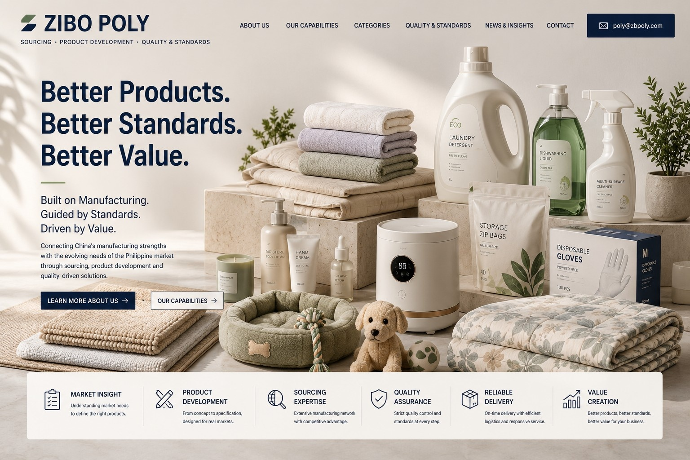

UNDERSTAND
Market · Consumer · Use · Opportunity

Products are part of everyday life.
We believe everyday products deserve thoughtful development, reliable quality and fair value — from the products that keep a home clean to those that bring comfort to people and pets.
Better everyday products can make everyday life a little better.Behind the products is manufacturing.
Behind the quality are standards.
But in front of the customer is a better everyday life.
Manufacturing is the foundation.
Based in Shandong, Zibo Poly works close to China's established manufacturing ecosystem and develops products with suitable manufacturing capabilities across specialized production regions.
Built on Manufacturing. Guided by Standards. Driven by Value.A good price means little without a clearly defined product. We look first at use, material, specification, performance and the appropriate quality benchmark — then commercial value.
Market · Consumer · Use · Opportunity
Product · Material · Specification · Standard
Factory · Sample · Testing · Packaging
Quality · Performance · Consistency
Production · Cost · Logistics · Value
Home essentials · Storage · Mats · Everyday household products
Bedding · Towels · Blankets · Bath & comfort products
Laundry care · Household cleaning · Everyday cleaning solutions
Gloves · Storage bags · Selected disposable products
Everyday pet care products & accessories
Selected personal care · Beauty · Cosmetics
Selected practical appliances for everyday living
Categories continue to evolve with market needs and product opportunities.
Better value comes from the right material, specification, manufacturing capability, consistent quality and a price appropriate for the market.
Sometimes the answer is a better product. Sometimes it is a simpler product. Sometimes it is a better way to make it.
Our job is to find the right balance.For cleaner homes. More comfortable living. Easier everyday routines. And a little more joy in ordinary life.